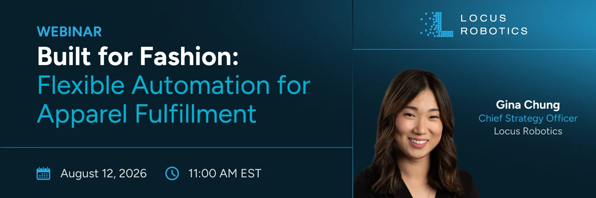
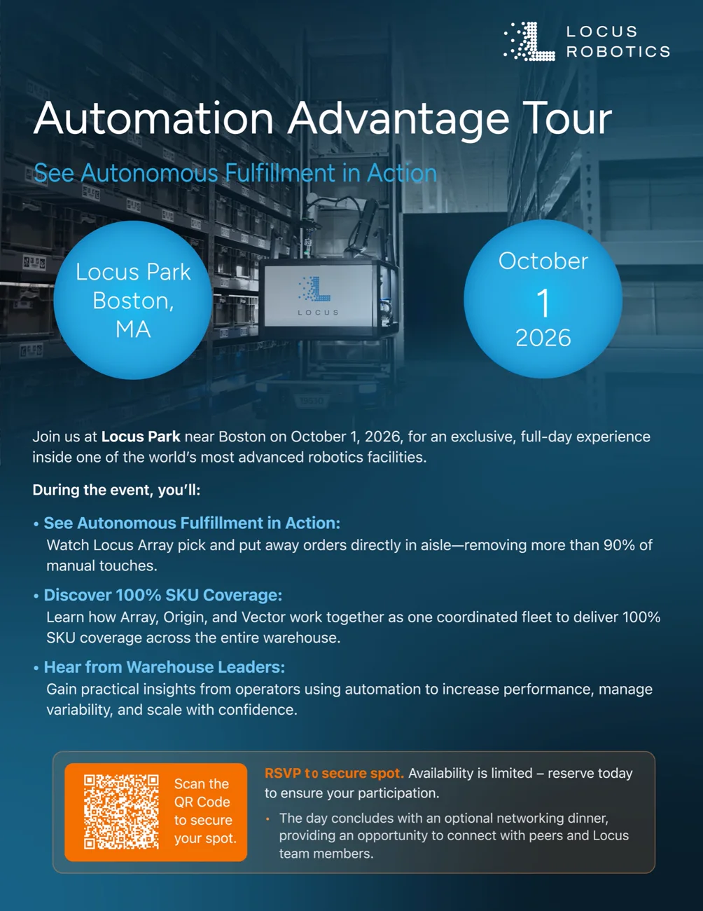
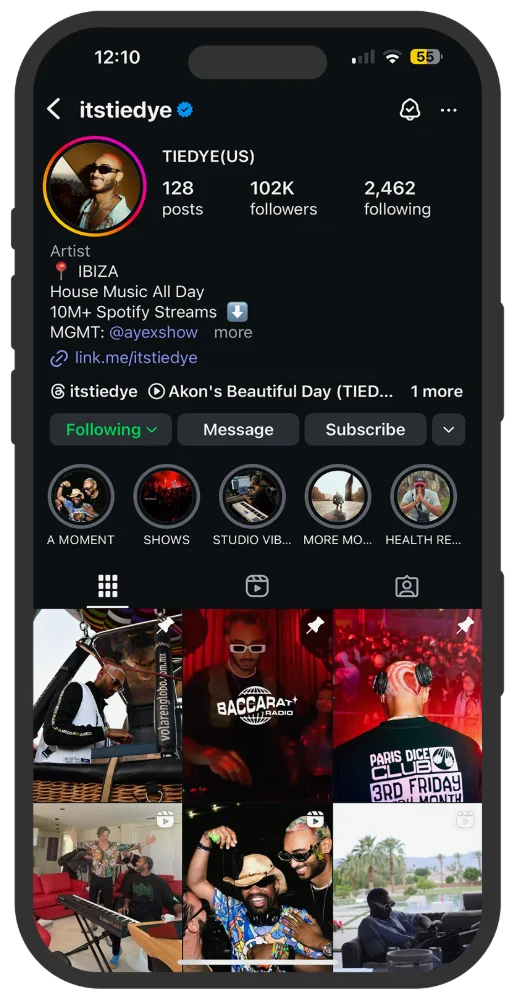
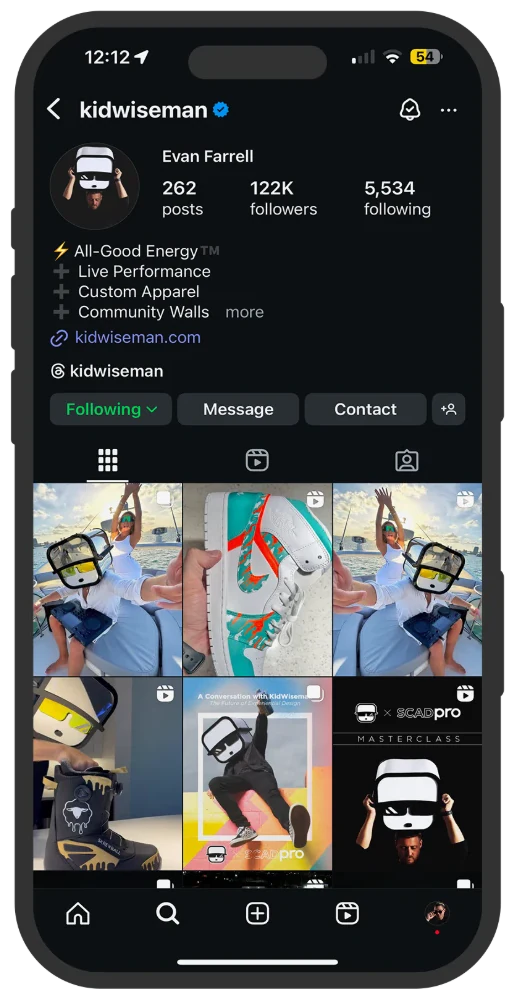
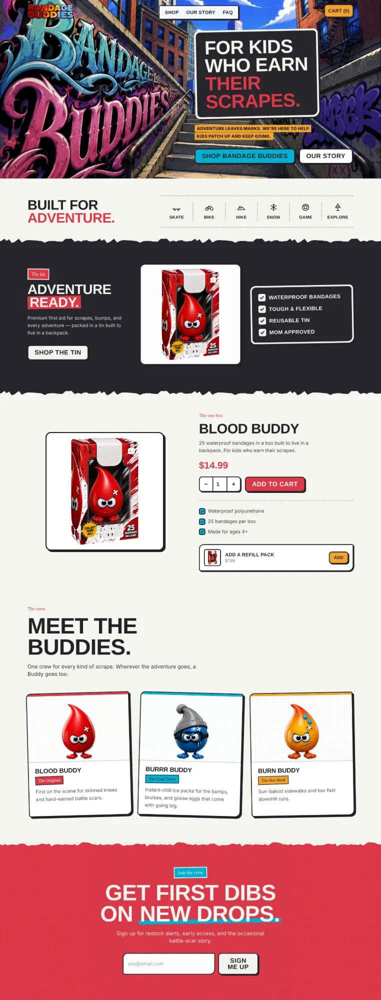
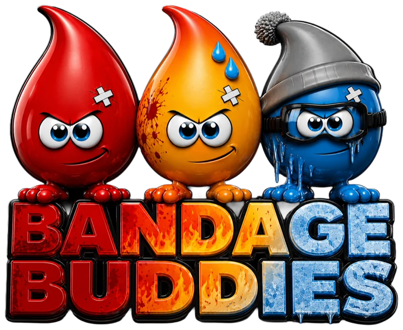
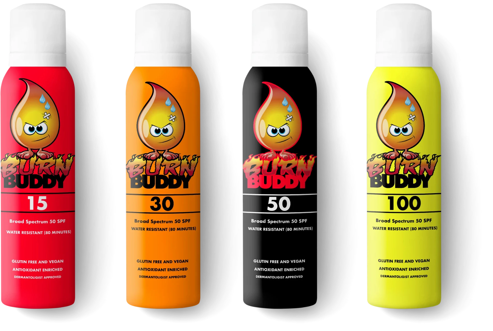
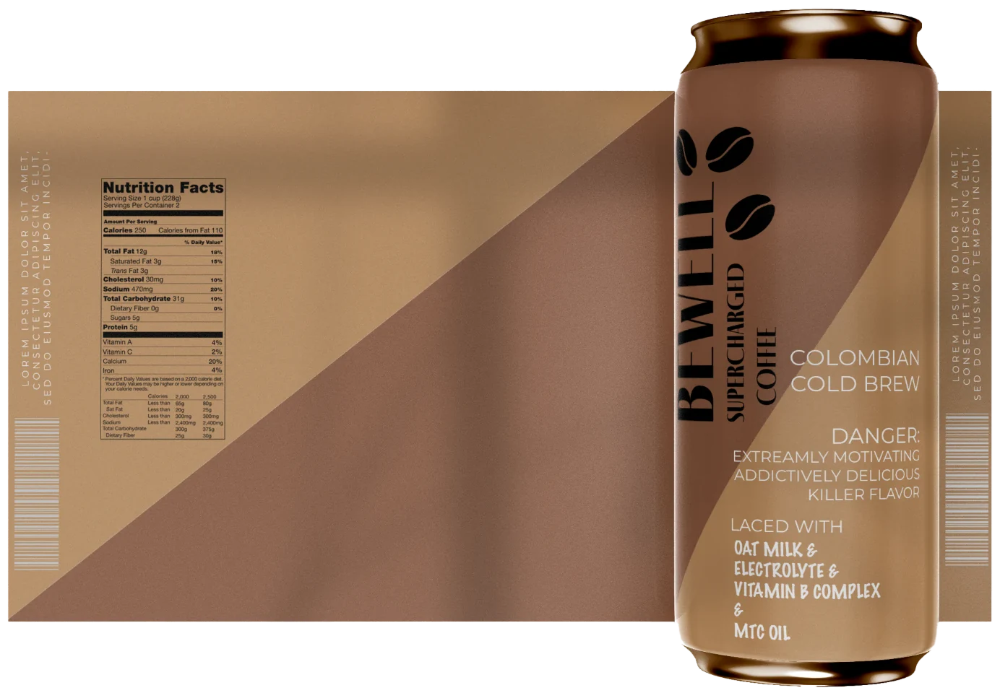

Social media strategy and content
Hayden Levinson
Six years of building the strategy, making the content and reading the numbers.
I run every channel the same way.
-
Audit
Start with what has already gone out. Sort every post by format, topic, day, copy length and cadence, and find what the audience actually responds to.
-
Plan
Decide what each channel is for, what the mix is, and what's out. Leaving a platform alone is part of the plan.
-
Make
Shoot, cut, design and write it myself, so the plan and the content never drift apart.
-
Measure
Name the number that proves the plan before anything is posted. Report it, test against it, and change the plan when it says to.
Locus Robotics
Content strategy for a B2B robotics brand on five platforms.
- Problem
- Engagement sat around 3% across LinkedIn, Instagram, Facebook, X and YouTube.
- Move
- Audit every post by format, topic, day, copy length and cadence. Rebuild the mix around what the data backs. A/B test the rest.
- Measure
- Engagement rate. About 3% to 7%, reported post by post to executive leadership.
The content mix, one piece per job.
Engagement rate, up from about 3%. It rose to about 7%.


Planned, designed and produced by me. AI agents I built checked each piece against the brand guidelines before it went out.
Creators and artists
Growth strategy for creator and artist accounts.
- Problem
- Feed posts mostly reach people who already follow. Growth has to come from people who don't.
- Move
- Lead with Reels, the format Instagram shows to non-followers. Use Stories to keep the existing audience close.
- Measure
- Non-follower reach. One month: 891,874 views, 64% from Reels, 81% from people who didn't follow. Reach up 169.9%.
5M+ followers across the accounts I manage.


Danny Way
Channel strategy for an athlete whose whole audience is on one platform.
- Problem
- Everything runs through Instagram, to people who already follow him. Twenty-five years of footage sits unused.
- Move
- Take the archive to where non-followers are, in two phases, and leave two platforms out on purpose.
- Measure
- Share of his audience outside Instagram, starting at zero. First signal: non-follower views. Gate for long-form: completion rate by subject.
- Now Instagram The whole audience. Reach goes to people who already follow.
- First TikTok and YouTube Shorts Shown to non-followers by default. The archive supplies the content, so the test is cheap.
- Then YouTube long-form Only the subjects short-form proves. The data picks them, not a guess.
-
Out
Facebook and XWrong audience, and too many channels for one person to run well.
Bandage Buddies
Brand and launch strategy for a first-aid brand in action sports.
- Problem
- Every kids' bandage is a cartoon license or a pretty print. Nothing for kids who skate, ride and fall.
- Move
- Put the brand inside action sports culture, and give the characters a job: help a kid be tough and bounce back.
- Built
- The positioning, the brand and the storefront, all hanging on one line.
For kids who earn their scrapes.
The line, and the storefront built around it.


Packaging and brand design

